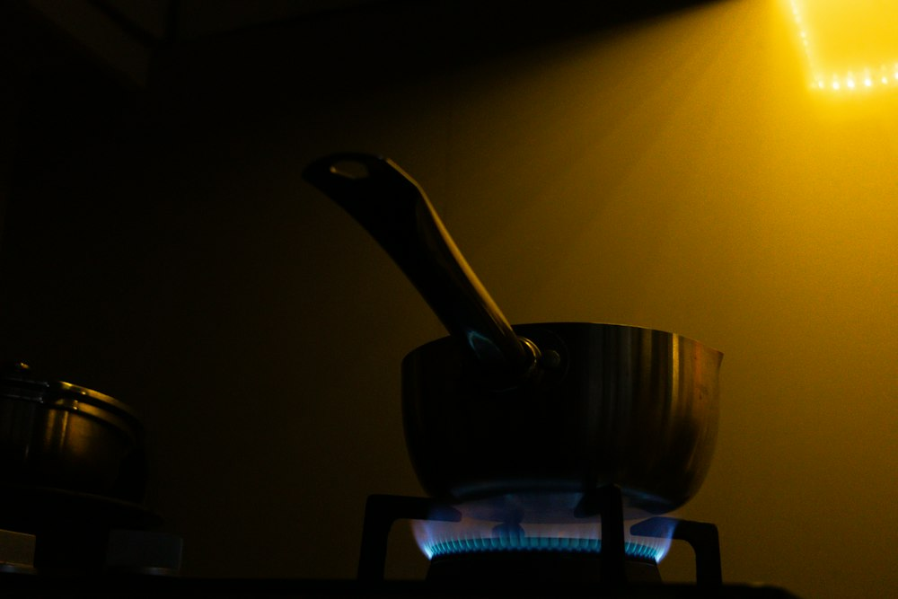

Guides
Plain answers about the tabs you keep open, and how to keep them without keeping them open.
-

Too many tabs open in Chrome? Keep them without keeping them open
Why tabs pile up, what each of Chrome's own tools does about it, and how to close a pile of tabs without losing the thought behind them.
-

How to save Chrome tabs for later and bring the whole set back
Four ways to save tabs for later in Chrome, what each one keeps, and how to reopen a whole set of tabs in one click.
-

How to pick up where you left off in Chrome
Reopen yesterday's tabs, recover a closed window, and come back to a task days later, with Chrome's settings and with Simmer.
-

Is your tab manager private? What Simmer reads, and where it keeps it
What a tab manager extension can see, the questions to ask before installing one, and exactly what Simmer reads and stores.